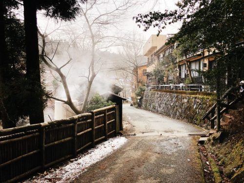
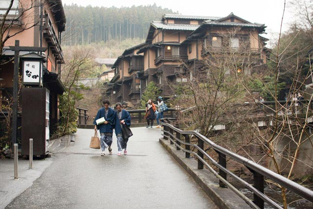
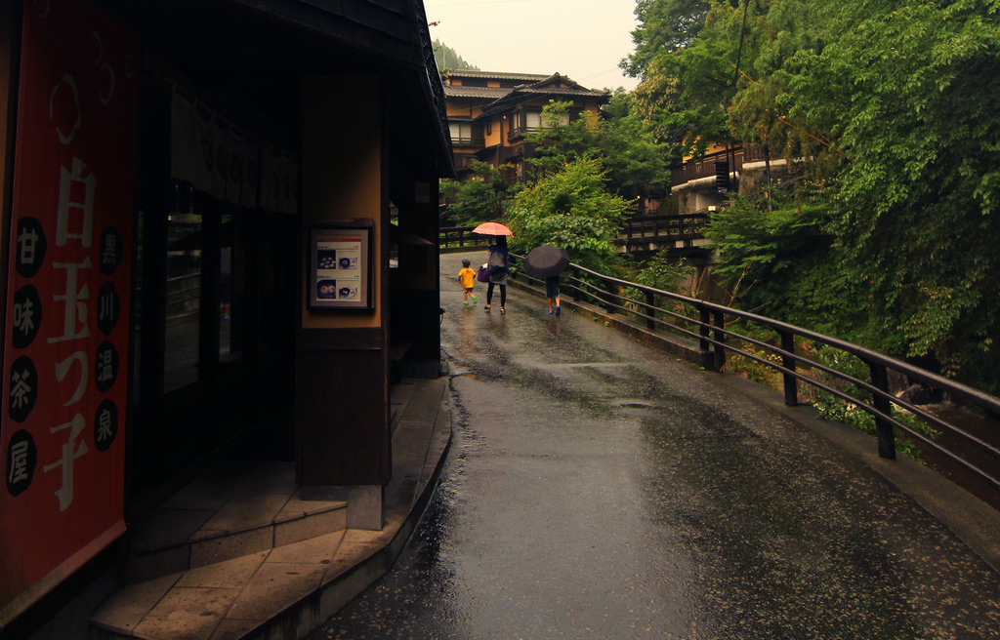
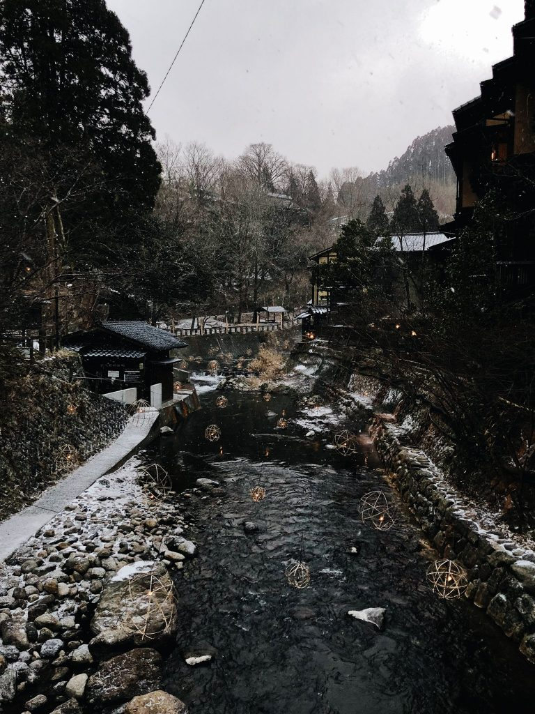

Kurokawa Onsen (黒川温泉) is one of Japan's most attractive hot spring towns, located in the middle of Kyushu about 20 kilometers north of Mount Aso. Well coordinated efforts by the town to maintain a pleasant, traditional atmosphere have kept Kurokawa free of the massive concrete hotels, neon advertisements and loud colors that are encountered in many of Japan's other resort towns.
Instead, Kurokawa's townscape is dominated by natural colors and materials, wooden buildings, earthen walls, stone stairs and a river flowing through. The town center, located in a forested valley, is compact and easily explored on foot, except for a few ryokan which are located less centrally.
The town's lanes are lined by ryokan, public bath houses, attractive shops and cafes, a small shrine and bridges that lead over the river directly to ryokan entrances. A walk through town is particularly enjoyable in yukata and geta sandals provided by one's ryokan. Maps and other information can be found at the information center located in the town center.
While staying guests naturally have the opportunity to enjoy their own ryokan's baths as often as they wish, it is also possible for overnight visitors and daytrippers to explore any other bath in town during daytime and engage in a so called Rotemburo Meguri ("tour of outdoor baths").
Kurokawa's town center is small and compact and can be easily navigated by foot. The exception are a few ryokan such as the Yamamizuki and Hozantei, which are located one to three kilometers outside of the town center. Daytime visitors without a rental car seem to have no choice but to walk to these more remote ryokan, while staying guests are provided with a pick up service.
Getting There
By Highway Bus
A direct highway bus runs twice per day between Fukuoka (Hakata Station, Tenjin Bus Center and Fukuoka Airport) and Kurokawa Onsen. The one way trip takes around 2.5 hours, costs 3090 yen and is covered by the Sun Q Pass.
By train (for rail pass holders)
Kurokawa Onsen is not connected to the railway network, but Japan Rail Pass and Kyushu Rail Pass holders can save a few yen by boarding the above mentioned Fukuoka-Kurokawa highway bus at Hita instead of Hakata. Hita Station is accessed from Fukuoka's Hakata Station by direct limited express train (75 minutes, 3000 yen one way) or by local trains via Kurume (100 minutes, 1650 yen); both fully covered by the JR passes. The bus ride from Hita Bus Center to Kurokawa takes 70 minutes and costs 1850 yen. There are two buses per day.